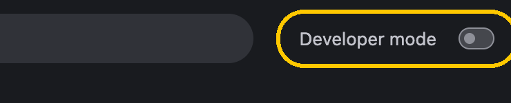
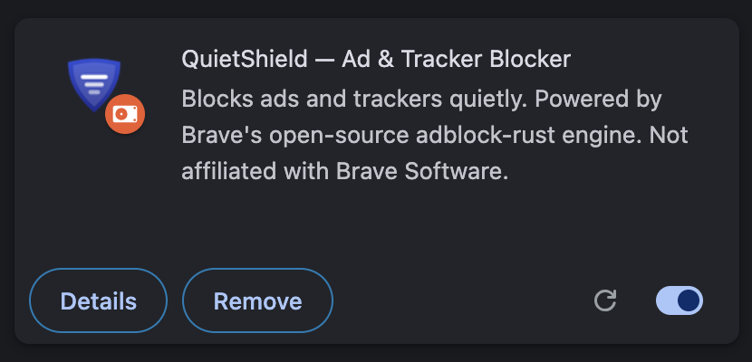

QuietShield
A free ad and tracker blocker for Chrome, powered by Brave's open-source adblock-rust engine and filter lists. Installs in about a minute.
Download QuietShieldWorks in Chrome, Edge, Brave, Opera and other Chromium browsers. All versions
-
Unzip the download
Double-click
quietshield.zip. You'll get a folder called quietshield. Move it somewhere permanent, like your Documents folder. Chrome runs the extension from this folder, so don't delete it. -
Open the extensions page and turn on Developer mode
Paste this into the address bar:
chrome://extensionsThen switch on Developer mode in the top-right corner.

-
Drag the folder onto the page
Drag the quietshield folder from your Downloads or Documents window and drop it anywhere on the Extensions page. (Or click Load unpacked and choose the folder.)
QuietShield appears in the list. That's it — click the puzzle-piece icon in the toolbar to pin it.

Updating
QuietShield checks GitHub once a day and shows a banner in its popup when a new version is out. Download it, replace the contents of your quietshield folder, then click the ↻ reload icon on the QuietShield card. Your settings are kept.
Troubleshooting
- QuietShield turned itself off. Chrome sometimes disables developer-mode extensions after a browser update. Open
chrome://extensionsand switch it back on. - "Manifest file is missing". You dropped the wrong folder. Pick the folder that directly contains
manifest.json. - A site looks broken. Click the QuietShield icon and untick Shields up for this site, then reload.
Privacy
No accounts, analytics or tracking. All filtering happens on your device. The only request QuietShield makes is the daily update check to GitHub, which you can turn off in the popup. Privacy policy.